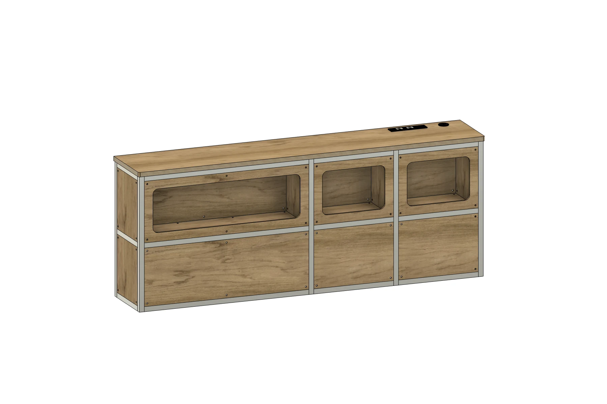
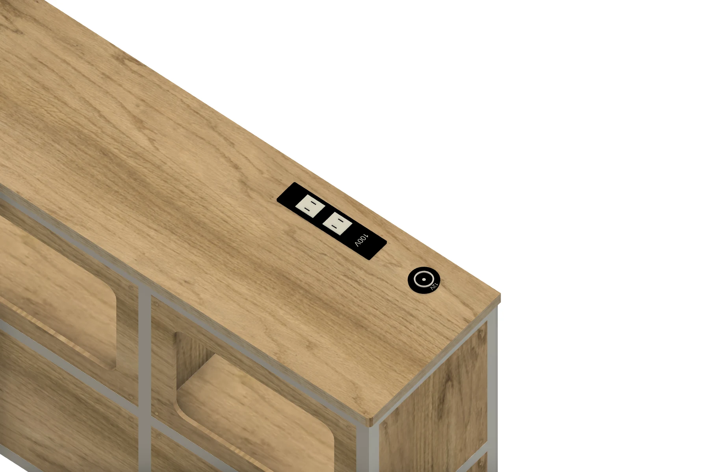

モジュール一覧 / サイドキャビネットMODULE 05 / 11
Side cabinet
ALUMINUMサイドキャビネット
収納と電源を、すっきりひとつに。
アルミフレームと合板パネルでまとめた、シンプルなサイドキャビネット。取り出しやすいオープン収納に、天板上の100Vコンセントと12V出力を備えています。
Side cabinet バーチ合板
バーチ合板
バーチ合板01
取り出しやすい収納正面から使える3区画のオープン収納
02
100V・12Vの電源天板上にコンセントと12V出力
03
奥行255mmの天板ALBERO（アルベロ）合板・厚さ18mm
OPEN STORAGE / POWER
必要なものを、手の届くところに。
正面から取り出せる収納と、天板上の電源。毎日の使いやすさをシンプルにまとめています。


DETAILS
モジュールの内容
- 合板の仕上げ
- ヘキサ合板（ブラック）／バーチ合板
- 合板の小口
- どちらの仕様も木の色・木目
- フレーム
- アルミフレーム
- 収納
- オープン収納3区画
- 電源
- 100Vコンセント2口／12V出力1口
- 天板
- ALBERO（アルベロ）合板・幅1,410 × 奥行255 × 厚さ18mm
- 天板上面高さ
- 550mm（コンセント等の突出を除く）